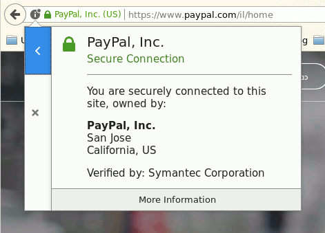

פרטיות והצפנה
עירא אברמוב, אייקון 2017
iconfestival2017(@)ira.abramov.org
https://ira.abramov.org/encryption101

מי אני
- חובב רשתות חברתיות מקוונות מאז 1990.
- עובד כמנהל מערכות ואבטחתן מאז 1995.
- פעיל זכויות דיגיטליות מאז 1996.
- ממקימי "המקור", "התנועה לזכויות דיגיטליות".
- פעיל נגד המאגר הביומטרי, בעד פרטיות ועוד.
- חובב מד"ב, מייקינג, מדע וחשיבה ספקנית.
- מדי פעם מרצי בכנסי האגודה.
מטרות להיום
- הגדרה כללית של מהי פרטיות.
- רעיונות כלליים על מהי הצפנה דיגיטלית.
- המלצות על כלים זמינים ואתרים ללימוד הלאה.
- בין לבין איזכורים של סיפורת ומד"ב כי אייקון...
- אם ישאר זמן, ורצון מהקהל, אסביר מהו בלוקצ'יין (מטבעות קריפטוגרפיים כמו ביטקוין).
- שאלות ותשובות.
לא יהיו פה
- מתמטיקה מפורטת מדי.
- המלצות להיות פרנואידים כמוני.
- ספוילרים למשחקי הכס.
- גיפים של חתולים.
המציג אינו מומחה!
לא חייבים לסמוך על שום דבר שאני אומר, רצוי לחפש ולהצליב מקורות ברשת, ולהפעיל שיקול דעת וחשיבה ביקורתית.
הכלים שאני משתמש בהם מתאימים לי, אולי יש אחרים שיתאימו לכם.אני אשתדל לתת לכם כללי אצבע לזהות מה הוא כלי טוב.
שני סיפורים
Oliver Sipple
Jenny Paton
למה לי לדעת מה זו הצפנה?
מתמטיקה זה מרתק
הממשלה מאזינה - משרד הביטחון או מס הכנסה
האויב מאזין!
אויב: ריגול תעשייתי, תקיפת טרור מידע, מפרסם או נותן שירות (למשל ביטוח), גנב זהויות, רכלנים ומלעיזים.מה זו פרטיות?
ההרגשה האישית? הגדרה פילוסופית/אתית? בעיני החוק?האם אפשר לתת תשובה קבועה בכלל, או שתרבות וטכנולוגיה תמיד ישנו את ההגדרה?
פרטיות: הגדרה מסורתית
"שיעזבו אותי בשקט"
רלוונטי לעולם שבו אתה רוצה שהשלטונות ידעו עליך את המינימום האפשרי כדי לעזור לך לשמור על רכוש פיזי
פרטיות בעולם המודרני,
במיוחד בעידן המידע
מידע = כסף = כלכלה = רווחה = זכויות אזרח = בריאות = חינוך = ביטחון
בנוסף, הרבה מהקניין הפרטי שלנו בעצם דיגיטלי, קניין רוחני מתערבב עם פלטפורמות וכולי.
פרטיות בעולם המודרני,
במיוחד בעידן המידע
החוקים המתיישנים כבר לא מכסים נכון את הצורך בשטח.
התרבות משתנה, אנחנו מוכנים לחלק הרבה יותר מידע כדי לקבל שירותים ומוצרים.
Daniel Solove, The Future of Reputation (2007):
Some teenagers have contradictory ambitions for their posts. One teenager interviewed for a story in the New York Times Magazine explained that "he wanted his posts to be read, and feared that people would read them, and hoped that people would read them, and didn't care if people read them."
והישראלים?

פרטיות מוגדרת לצרכי השיחה המודרנית, לפי סולוב (2008):
על דרך השלילה. פרטיות לא מוגדרת בקווים אוביקטיביים וספציפיים, אלא ע"י הרגשה אישית של פלישה.
- איסוף מידע: מעקב, תחקור.
- עיבוד מידע: אגרגציה, זיהוי, ערעור בטחון אישי, שימוש משני, הוצאה מהכלל.
- הפצת מידע: שבירת אמון, גילוי סוד, חשיפה, הגברת נגישות, סחיטה, לקיחה (גניבה/הלאמה), סילוף.
- פלישה: חדירה, הפרעה בתהליך החלטה.
אסכולות אחרות
"You have zero privacy anyway, get over it!"
למשל סקוט מקנילי, דייויד ברין, דייויד פרידמן.
טיעונים לכך שפרטיות זה קונסטראקט חברתי מודרני שלא היה בעבר ולא יהיה בעתיד, חלק מהצידוקים לדרישה לשקיפות רדיקלית.
ונעבור לקטע הטכני...
- הצפנת מסרים בינאישיים
- חתימה דיגיטלית
- אמון דיגיטלי
- הצפנת סיסמאות
- חשיבה אבטחתית בסיסית
סוגי תקשורת
אדם לאדם
מי בצד השני? האם מאזינים לנו?
האם יש שרת מרכזי? כמה הוא יודע על השיחה ועל תוכנה?
משתמש מול אתר ציבורי
מי בצד השני? האם מאזינים לנו?
מידע ששותף ברשת (מרשם בלוקצ'יין, קוד, תוכנה וכולי)
מה מקור המידע? האם המידע אמין?
הצופן הכי עתיק
הצופן התנ"כי: צופן צופן א"ת ב"שכל אות מוחלפת בזו שמנייניה מהסוף זהה לשלה מן ההתחלה.
מופיעה לראשוה בספר ירמיהו: "וּמֶלֶךְ שֵׁשַׁךְ יִשְׁתֶּה אַחֲרֵיהֶם"
דוגמא חיה.פונקציה הפיכה
הצפנה סימטרית
- אלגוריתם מהיר, מתאים להזרמת נתונים.
- שני הצדדים צריכים לדעת מראש את המפתח הסודי.
- דרוש שלב התחלתי של תיאום מפתחות.
- דוגמא פשוטה.
- דוגמא מהעולם האמיתי AES.
הצפנה א-סימטרית
- אלגוריתם איטי וכבד, מתאים למנה קטנה של נתונים, למשל קוד גיבוב או מפתח להצפנה סימטרית.
- שני הצדדים מפיצים מפתח ציבורי ושומרים על מפתח סודי.
- דרושה דרך לאמת אם המפתח שמצאת אכן שייך לאדם ששמו כתוב בו.
- דוגמא: RSA.
PGP
PGP PKI
PGP PKI
PGP PKI
Web PKI

APP PKI
Web PKI
Web PKI
Web PKI
פונקציית גיבוב
פונקציית גיבוב צופנית

חתימה דיגיטלית
חתימה דיגיטלית

מיחשוב קוואנטי?
- עוד רחוק מלהיות קיים.
- עובדים על שיטות מתמטיות עמידות.
איך לצלול לשם?
הצפנה די טובה
- WhatsApp המבוסס על Signal
- Keybase, Briar Project
- Firefox Send
WhatsApp PKI
WhatsApp PKI
WhatsApp PKI
ניהול סיסמאות
- אפשר לשמור בדפדפן, בתנאי שזה שמור בסיסמא חזקה.
- סיסמא שונה ומשונה לכל אתר.
- למתקדמים: גם כתובת דוא"ל שונה לכל אתר.
- להשתמש במנהל סיסמאות.
זיהוי כפול
- עדיף לא ביומטרי, אבל לפחות שלא יהיה הראשי.
- להתקין Google Authenticator ולשחק עם זה.
- לא ממליץ על זיהוי כפול דרך SMS.
- בעתיד: כרטיסון U2F.
מנהלי סיסמאות
- ההמלצה שלי - KeePassX, keepass2android.
- קיימים גם 1password/Lastpass, פחות מומלצים.
- ניתן לסנכרן בין מכשירים ומערכות הפעלה.
- ודאו שאתם סוגרים בסיסמא חזקה, הרבה חזרות.
שיפצור דפדפן
- Ghostery, Privacy Badger, HTTPS Everywhere.
- לכבות 3rd Party Cookies. לכבות אפשרויות מיותרות.
- עדיפות לדפדפנים בקוד פתוח כמו פיירפוקס וכרום.
- לשים לב להרשאות שמקבלים פלאגאינים.
שיפצור טלפון
- להפעיל נעילת מסך, לא פתיחה ביומטרית.
- לא לתת הרשאות מיותרות לתוכנות.
- להחליף פייסבוק בפייסבוק לייט או להסיר לגמרי.
- סיבות בעד ונגד הפעלת מעקב ומחיקה מרחוק.
- הצפנת המכשיר.באייפון זה מגיע מובנה.
פראנויה למתקדמים

פראנויה למתקדמים
- להחליף מנוע חיפוש, למשל DuckDuckGo.
- לכבות רוגלות מובנות, כמו עזרת השלמת חיפוש וכדומה.
- להצפין את הדיסק, במיוחד בלאפטופ.
- זיהוי כפול בלוגין המקומי.
- החלפת הקושחה למערכת חופשית בטלפון.
- הצפנת המכשיר.באייפון זה מגיע מובנה.
- שימוש ב־root על אנדרואיד כדי לחסום רוגלות מוכללות.
עוד מידע
EFF: Surveilance Self-Defence
Security In A Box
סיפורת מומלצת
- הטכני: קריפטונומיקון - Neal Stephenson.
- העובדתי: "מילניום" של סטיג לארסן.
- היישומי/עתידני: סדרת "אח קטן" של קורי דוקטורוב.
- סדרת "מיסטר רובוט".
סיפורת לא מומלצת
- דן בראון (מבצר דיגיטלי, אינפרנו, הסמל האבוד).
- המשכי "מילניום" של דויד לגרקרנץ.
- הארי פוטר? משחקי הכס? הצחקתם.
- בערך כל תכנית אקשן/מד"ב/משטרה אי פעם.
תודה רבה!
iconfestival2017(@)ira.abramov.org
https://ira.abramov.org/encryption101